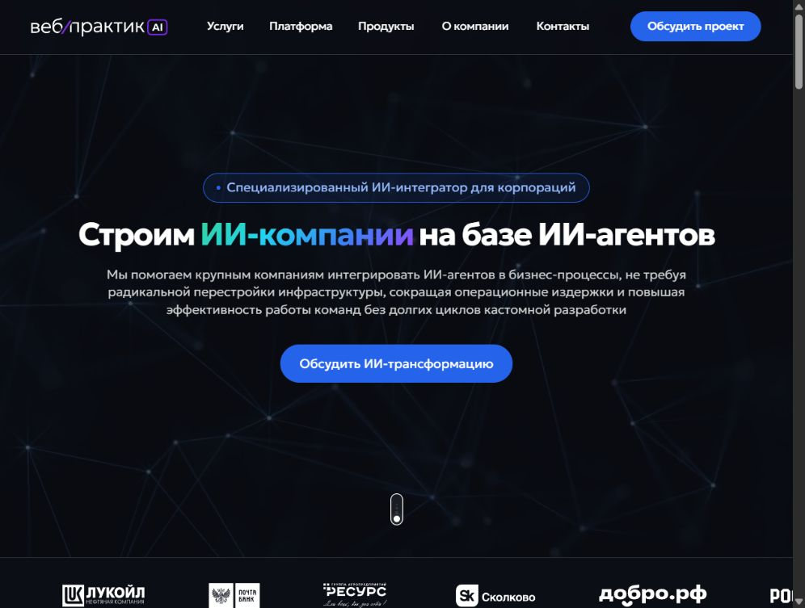

01 / UX/UI · Личный кабинет и аналитика
Крупнейшая платформа добрых дел
Интерфейсы для образовательных организаций: головного вуза и филиалов.
Привет, я Анастасия
Проектирую личные кабинеты и аналитику.
Создаю сайты — от дизайна до реализации.

Интерфейсы для образовательных организаций: головного вуза и филиалов.

Основной и международный сайты. Адаптивы, анимации и презентационные материалы.

Правила бренда, MVP в Claude Code и детальная проработка сайта в Codex.

Сайт направления искусственного интеллекта: от собственного дизайна до Тильды.
Мне интересно соединять интерфейсную задачу с визуальным решением и доводить проект до реализации.
В агентстве самостоятельно вела проекты и защищала решения клиентам с начала работы. В интерфейсных проектах проектировала кабинеты и аналитику, участвовала в командной работе над дизайн-системой.
Подробнее в резюме ↓Пришла Junior. В июне 2026 получила Middle после экзаменов перед руководством по системе Skills Team.
Сайты для фотошколы 1.61, RentRostov и BearOx. В BearOx использовала Spline 3D.
Создавала и реализовывала спецпроекты — сайты мероприятий и образовательных программ: дизайн, сборка на Тильде и адаптация под устройства. Также работала над презентациями, развивала фирменный стиль мерча и адаптировала рекламные макеты.
Расскажу о своём опыте и покажу проекты,
близкие вашим задачам.